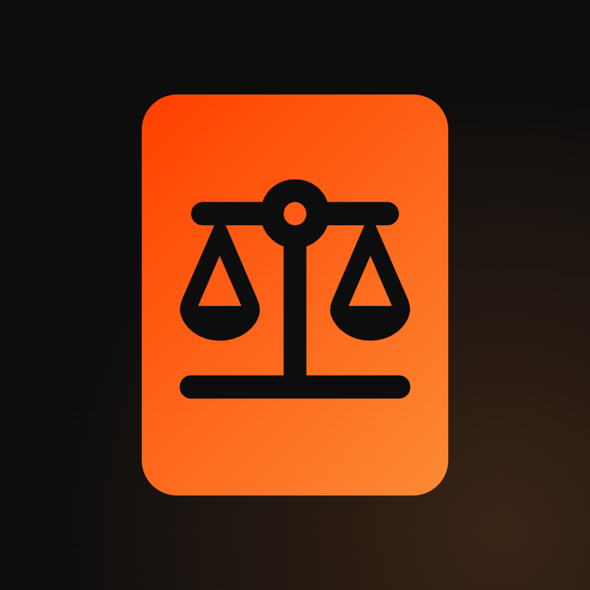

CDC na Mão
O Código de Defesa do Consumidor explicado: conte o que aconteceu e veja onde a lei fala do seu caso.
⬇ Baixar para Android (APK)
O que ele faz:
Como instalar: toque no botão acima, abra o arquivo baixado e toque em Instalar. Se o Android pedir, permita "instalar apps desta fonte". Em breve na Google Play.
O app ajuda a entender a lei e não substitui advogado, Defensoria Pública ou Procon.
- A lei inteira no celular, com cada trecho oficial e uma tradução em palavras simples logo abaixo.
- Conte o seu caso e veja uma análise neutra: o que a lei prevê, o que pode mudar o resultado e o que cada lado pode e deve fazer.
- Leitor de nota fiscal que confere o link da Sefaz e a loja antes de abrir.
- Para assistências técnicas: ordem de serviço com fotos, orçamento e termo de garantia em PDF.
- Prazos, carta de reclamação pronta, mitos e verdades.
Como instalar: toque no botão acima, abra o arquivo baixado e toque em Instalar. Se o Android pedir, permita "instalar apps desta fonte". Em breve na Google Play.
O app ajuda a entender a lei e não substitui advogado, Defensoria Pública ou Procon.